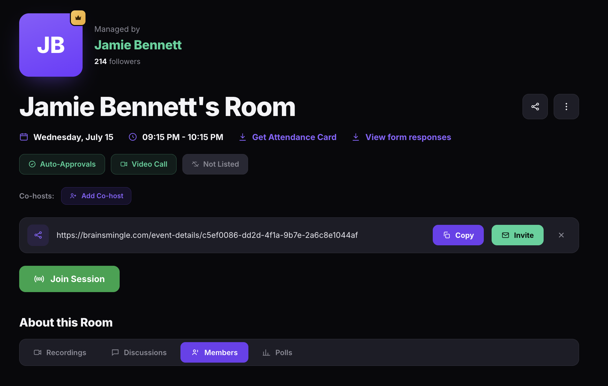
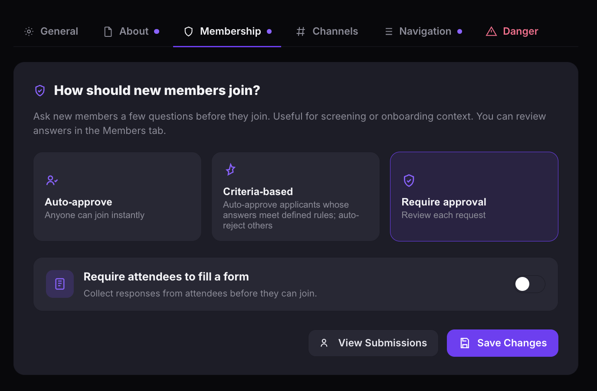
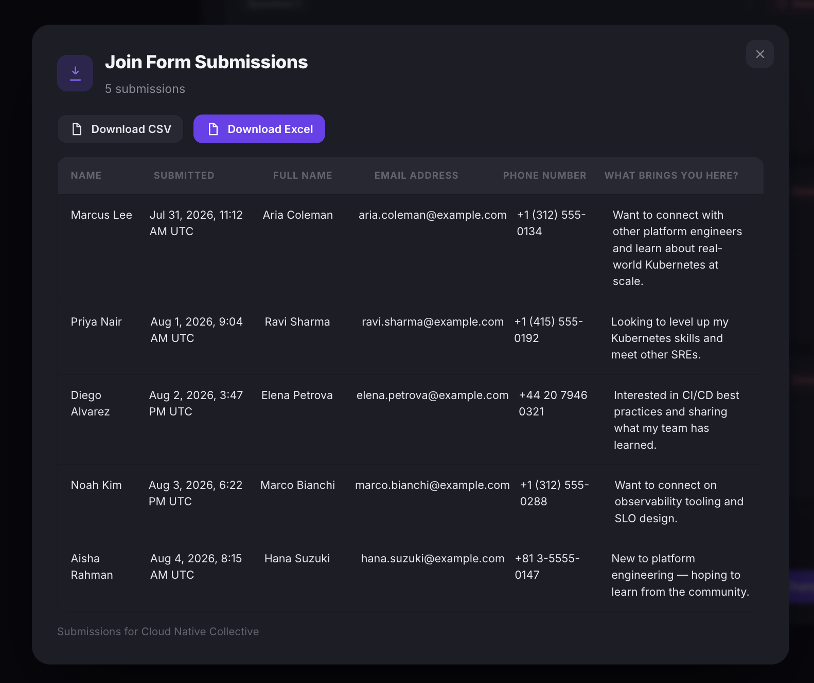

View and export form responses
Review form responses collected from attendees joining your sessions, courses, or communities. Export submissions as CSV or Excel for offline use.
Before you get started
- You must have enabled a form when creating the session, course, or community. See Create a registration form or Manage a community.
- You must have an Admin or Moderator role.
View form responses
The steps depend on where the form is attached:
- Video call or speed networking room — open the room detail page and click View form responses below the date and time.
- Community — open the community, go to Settings > Membership, then click View Submissions.



The submissions panel displays each response in a table with the member's name, submission date, and their answers to every form question.

Please note: The submissions link only appears if you enabled a form when creating the session, course, or community.
Export form responses
- Open the submissions panel using the steps above.
- Click Download CSV or Download Excel to export all responses.
Tip: Review form responses before the event to understand your audience and prepare relevant discussion topics.